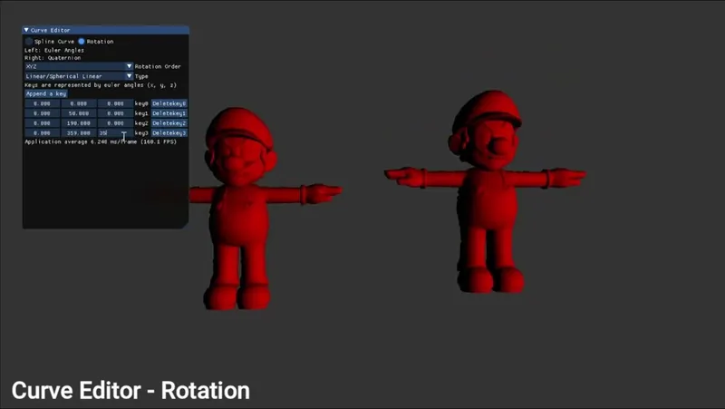
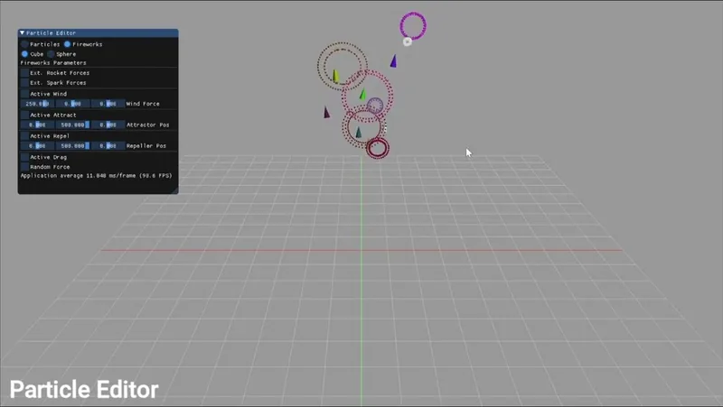
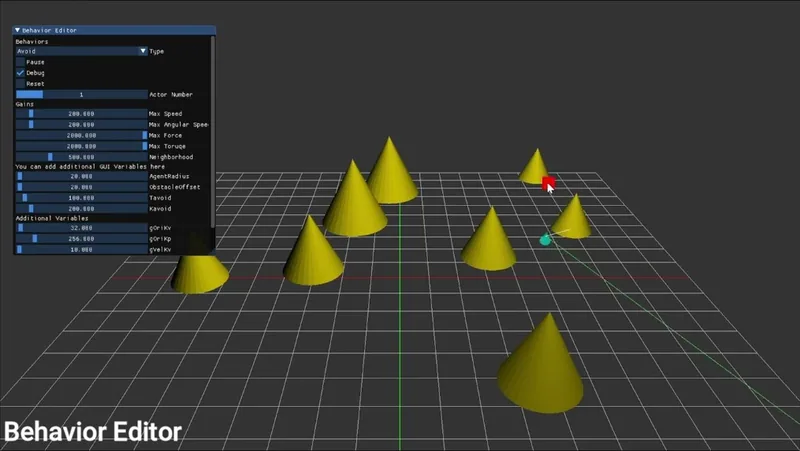

← All works

Animation Toolkit
An interactive animation toolkit: curve editing and rotations, forward and inverse kinematics, particle systems and behavioural animation.
- Year
- 2024
- Type
- Individual project
Overview
- Curve editorSpline curves and rotations
- KinematicsForward (FK) and inverse (IK)
- Particle systemsIncluding a firework simulation
- Behavioural animationGroups of agents driven by behaviours
-

Curve editor: rotation -

Particle editor -

Behaviour editor


Demo on YouTube:
On Bilibili: